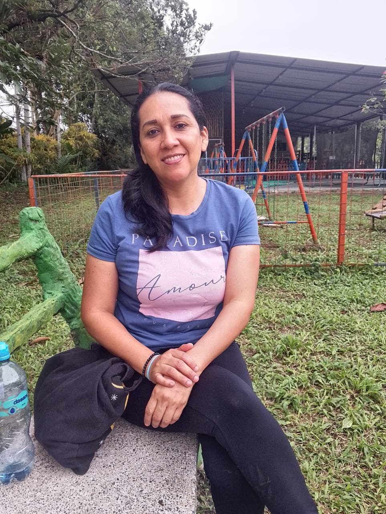

Reproduce la canción
Eras el cielo antes de que pudiera nombrarlo, fuiste abrigo antes de que supiera del frío.
Tus manos fueron mi primer refugio, y tu voz, el himno más seguro del mundo.
No supe cuánto dolía el amor hasta que vi tus ojos cansados, pero aún así, llenos de ternura por alguien que a veces no entendía cuánto dabas.
Callaste dolores que no merecías, y aun así, fuiste puente para que yo no cayera.
Me diste alas sin pedir que me quedara, pero aún vuelo con el recuerdo de tus abrazos.
Si alguna vez te fallé, guárdalo en un rincón suave del alma, porque cada día de mi vida te he amado más de lo que sé decirte.
Y si un día ya no estás para escucharme entonces susúrrame en los sueños, que sabré que aún me hablas como cuando dormía en tu pecho.